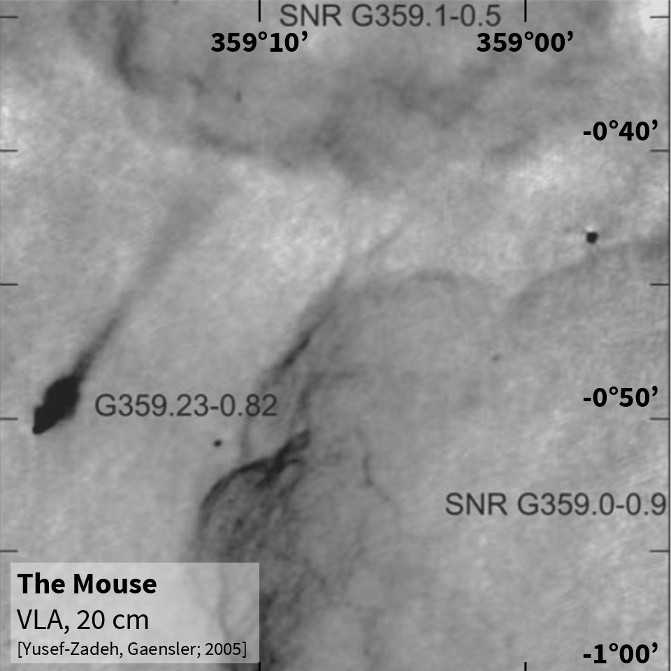
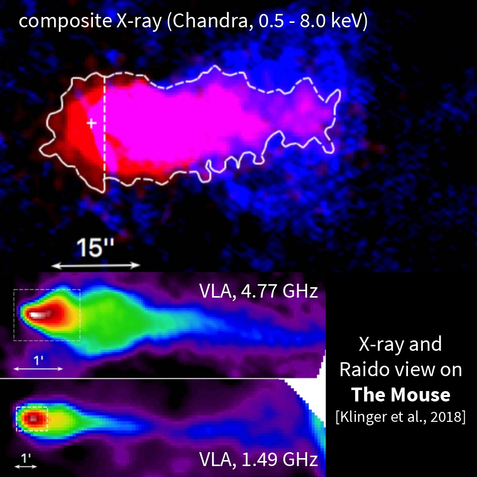
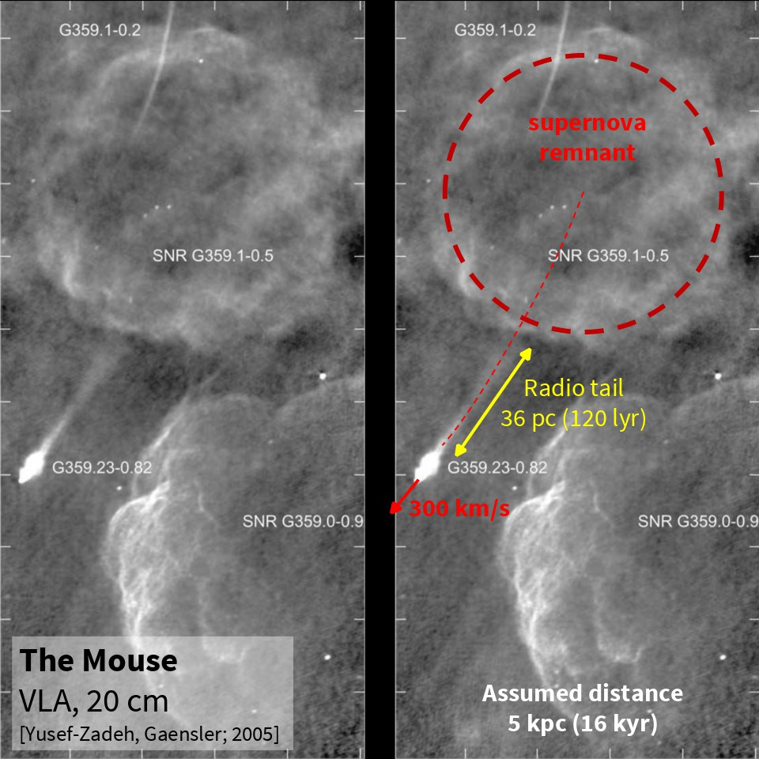
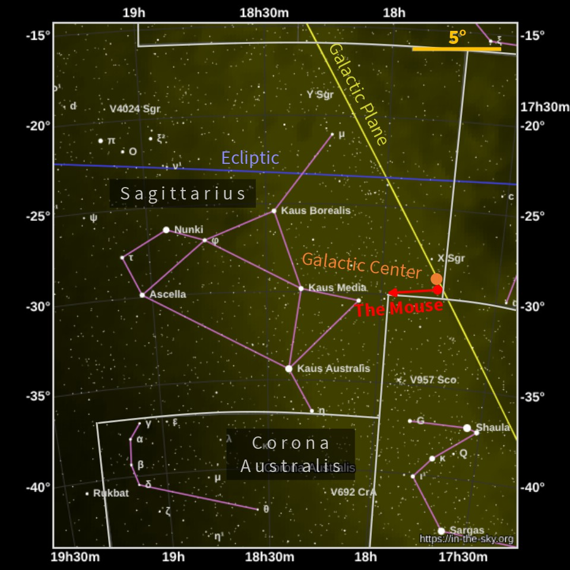

The Galactic Mouse
4 March 2026
The Galactic Mouse is found in the sky!And it is fleeing from the Galactic center at an immense speed of 300 km/s!
{kind=link}

{kind=link}

Where does it come from?
At the “nose” of the mouse sits a pulsar — a rapidly rotating neutron star (spin period ≈ 100 ms).It was born when a massive star ran out of nuclear fuel and collapsed. The explosion (a supernova) left behind both:
- an expanding remnant cloud
- and this fast-spinning neutron star
Age: ~26,000 years (It did not even witness Neanderthals.)
{kind=link}

The tail
The tail is 36 parsecs long (~120 light-years)! Pulsars emit energetic electrons (>1 TeV). In magnetic field, they produce synchrotron radiation visible in radio, optical and X-rays. But it shines too weak in visible light for you to see it with the naked eye or with an optical telescope.Still, I find it fascinating that there is a Mouse running away from its parental nebula in the Milki Way.
{kind=link}

Sources
[1] - F. Yusef-Zadeh, B. M. Gaensler. (2005).[2] - N. Clinger et al. (2018).